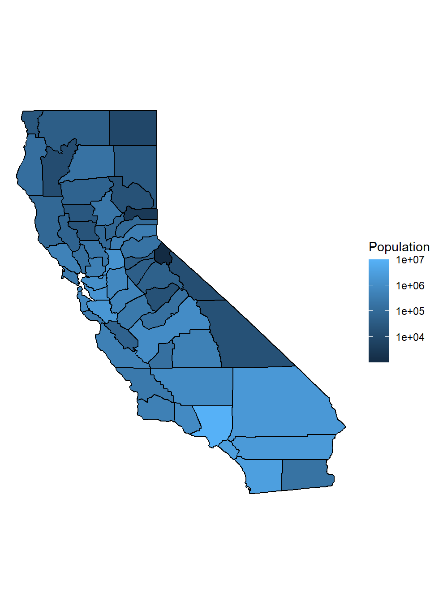
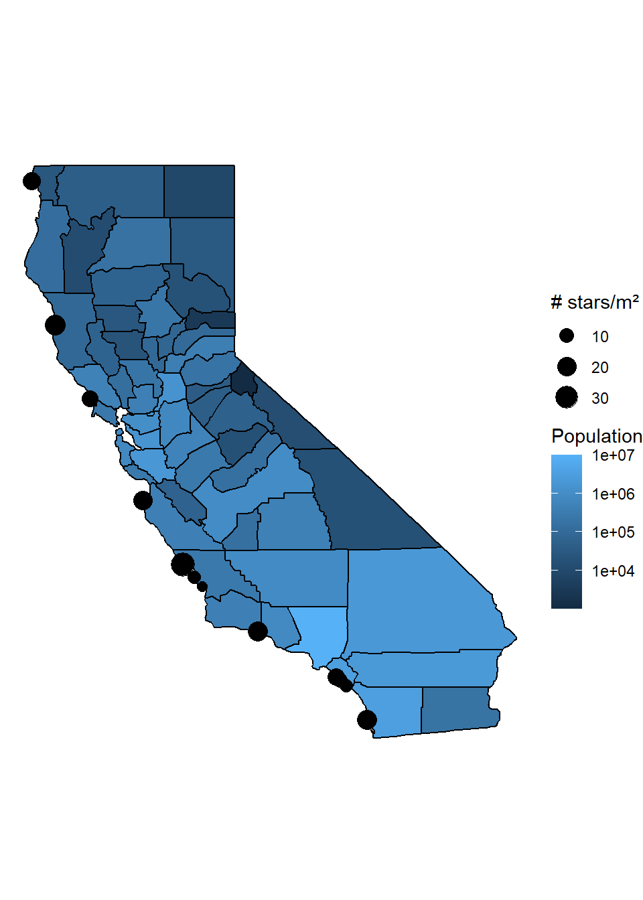
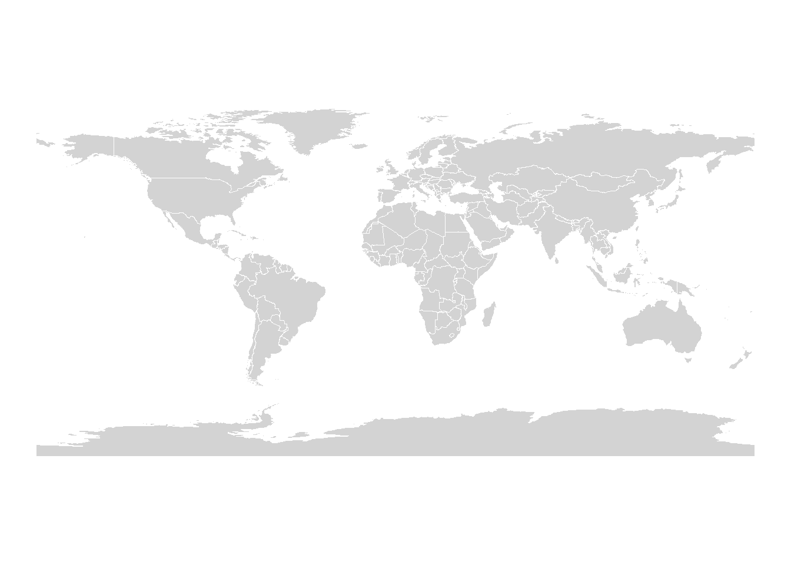
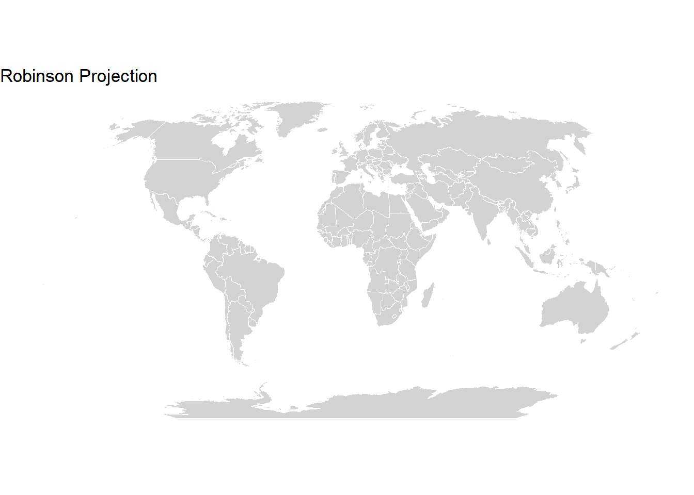
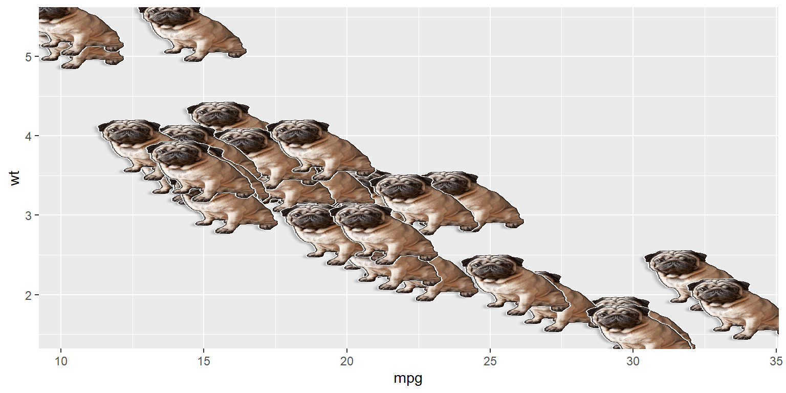

Intro to Maps Part 1
UH Fall 2026
2026-09-29
Working with Maps
Homework: Make a map using Quarto
Note
I am NOT a GIS person. Please refer to references on spatial analysis for theory.
Today is about getting a map on screen with real data.
There are many map packages in R. Here is a curated overview:
| Package | What it does | Needs API key? |
|---|---|---|
| {maps} | Simple polygon basemaps (country, state, county) | No |
| {sf} | Full-featured spatial data (GIS-grade) | No |
| {rnaturalearth} | World/country/state polygons as sf objects | No |
| {maptiles} | Download satellite/street tile basemaps | No |
| {leaflet} | Interactive HTML maps | No |
| {tmap} | Thematic maps, static and interactive | No |
| {ggmap} | Tile maps via Google/Stadia | Yes (credit card) |
Tip
Today: {maps} for polygons and a preview of {sf}.
Next class: {maptiles} + {leaflet} for tile and interactive maps — no API key required!
Helpful references: - Geocomputation with R - Bathymetry example - Earth Lab — CRS types
Install today’s packages if you haven’t already:
Load libraries:
Take a minute to explore both datasets before moving on.
map_data() pulls polygon boundaries for countries, states, and counties — ready to use with ggplot.
long lat group order region subregion
1 11.83295 46.50011 1 1 Bolzano-Bozen <NA>
2 11.81089 46.52784 1 2 Bolzano-Bozen <NA>
3 11.73068 46.51890 1 3 Bolzano-Bozen <NA>
4 11.69115 46.52257 1 4 Bolzano-Bozen <NA>
5 11.65041 46.50721 1 5 Bolzano-Bozen <NA>
6 11.63282 46.48045 1 6 Bolzano-Bozen <NA> long lat group order region subregion
1 -87.46201 30.38968 1 1 alabama <NA>
2 -87.48493 30.37249 1 2 alabama <NA>
3 -87.52503 30.37249 1 3 alabama <NA>
4 -87.53076 30.33239 1 4 alabama <NA>
5 -87.57087 30.32665 1 5 alabama <NA>
6 -87.58806 30.32665 1 6 alabama <NA> long lat group order region subregion
1 -86.50517 32.34920 1 1 alabama autauga
2 -86.53382 32.35493 1 2 alabama autauga
3 -86.54527 32.36639 1 3 alabama autauga
4 -86.55673 32.37785 1 4 alabama autauga
5 -86.57966 32.38357 1 5 alabama autauga
6 -86.59111 32.37785 1 6 alabama autaugaWarning
Forgetting group = group in your aesthetic is the #1 cause of “crazy line” plots. You will do this. Everyone does.
group = group?Warning
Those “crazy lines” mean ggplot is connecting all points in one continuous path — it has no idea where one polygon ends and the next begins.
The earth is not flat, but we visualize it in 2D — there are many projections to choose from.
See {mapproj} for available options.
Use a Mercator projection:
Use a sinusoidal projection:
Filter the states dataset to California:
Tip
Think, pair, share: Make a simple map of California using what you just learned. No peeking at the next slide!
Plot the population of every county in California.
First, we need county-level polygons and join them to our population dataset.
long lat group order region subregion
1 -86.50517 32.34920 1 1 alabama autauga
2 -86.53382 32.35493 1 2 alabama autauga
3 -86.54527 32.36639 1 3 alabama autaugaMake column names match before joining.
# A tibble: 6 × 7
subregion Population long lat group order region
<chr> <dbl> <dbl> <dbl> <dbl> <int> <chr>
1 los angeles 10081570 -119. 34.8 175 7827 california
2 los angeles 10081570 -118. 34.8 175 7828 california
3 los angeles 10081570 -118. 34.8 175 7829 california
4 los angeles 10081570 -118. 34.6 175 7830 california
5 los angeles 10081570 -118. 34.6 175 7831 california
6 los angeles 10081570 -118. 34.5 175 7832 california
Tip
transform = “log10” compresses the color scale so that less-populated counties are still visible alongside Los Angeles.
The stars dataset has seastar counts (per m²) at field sites in California.

ggplot() +
geom_polygon(data = CApop_county,
aes(x = long, y = lat,
group = group,
fill = Population),
color = "black") +
geom_point(data = stars,
aes(x = long, y = lat,
size = star_no)) +
coord_map() +
theme_void() +
scale_fill_gradient(transform = "log10") +
labs(size = "# stars/m²")
ggsave(here("Week_07", "output", "CApop.pdf"))Tip
ggsave() saves the last plot by default. Run it on the line immediately after your ggplot code, or pass the plot object explicitly.
Everything we just did works — but it’s the old way.
Here is a quick preview of where the field has moved.
The {sf} (“simple features”) package is the current standard for spatial data in R.
Tip
For any serious spatial analysis — buffering, intersections, area calculations — {sf} is the tool you want. Today’s {maps} approach is great for quick plots, but it won’t scale to real GIS work.
Install once:

No group! No longitude/latitude columns to manage! {sf} handles all of that.
coord_sf() handles projections using standard EPSG codes — much more rigorous than {mapproj}:

Note
Common CRS choices: "+proj=robin" (Robinson), 4326 (WGS84 / GPS), 3857 (Web Mercator).
Learn more at map chapter in ggplot2 book.

Make a map using Quarto with one of the following TidyTuesday datasets. Save your script and output appropriately.
Tip
The map does not have to be complex — a clean, labeled geom_polygon() or geom_sf() map with your data overlaid is exactly right.
Slides created with Quarto and RevealJS.
Some content adapted from Making Maps with R and Geocomputation with R.
OCN 682 | Week 7 | Intro to Maps Part 1